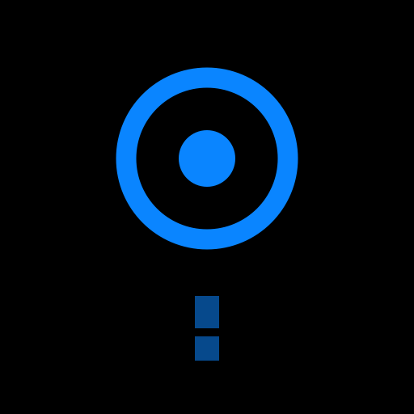
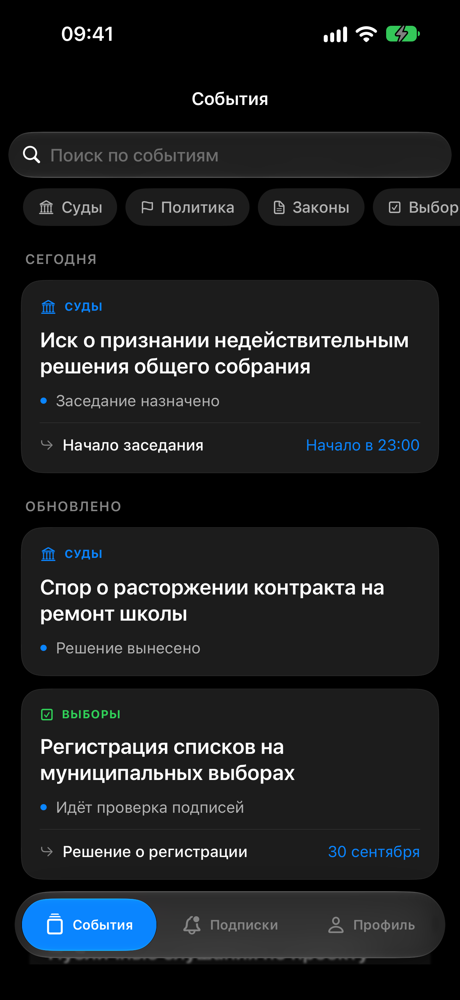
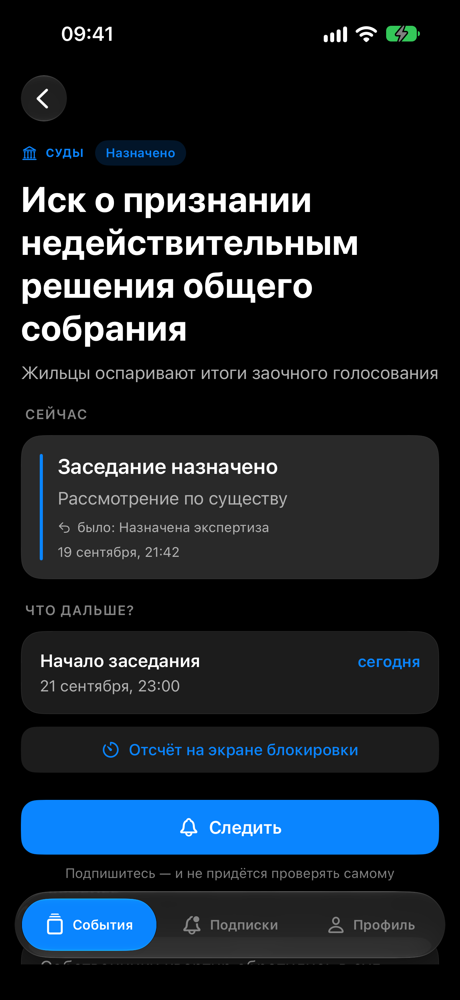
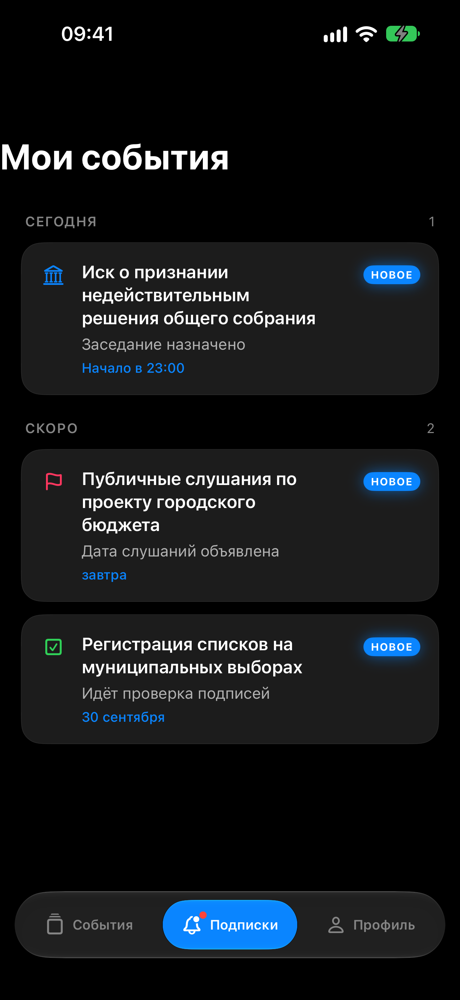
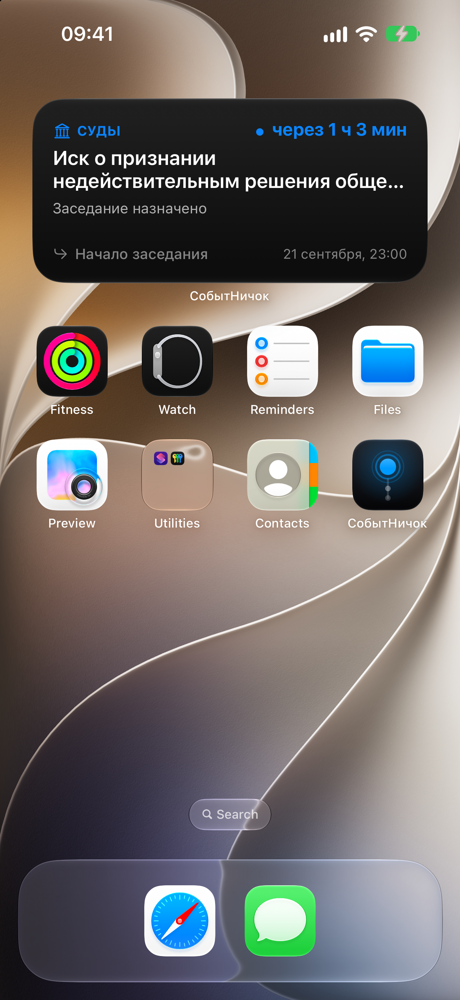
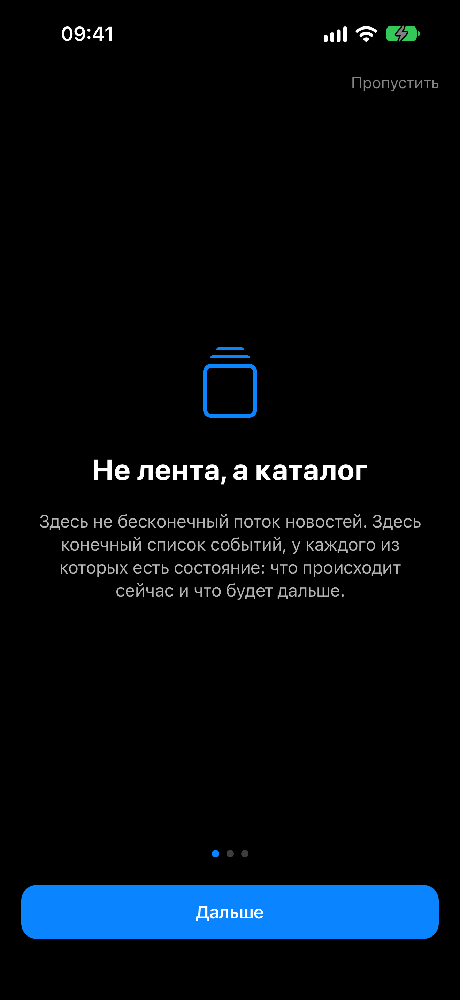

СобытНичок
Что сейчас и что дальше
Показывает состояние события, а не новости о нём. У каждого события —
одно текущее состояние и одно следующее действие с датой.
Добавить источник в AltStore
Адрес источника: source.json
Что внутри
- Каталог открыт без регистрации. Аккаунт нужен только чтобы подписаться.
- Виджет считает время сам — на домашнем экране и на экране блокировки,
без запросов к сети и без открытия приложения.
- Одно напоминание перед назначенным действием, и только если вы сами
выбрали, за сколько. По умолчанию выключено.
- Ленты нет намеренно. Вы открываете приложение, когда хотите,
а не когда вас разбудили.
- Точность не подделывается. Известен только день — будет день,
а не выдуманный час. Даты нет — так и написано.
Как выглядит





Требования
- iPhone с iOS 17 или новее.
- Установленный AltStore.
Приложение он подписывает вашим Apple ID сам — в источнике лежит неподписанный .ipa.